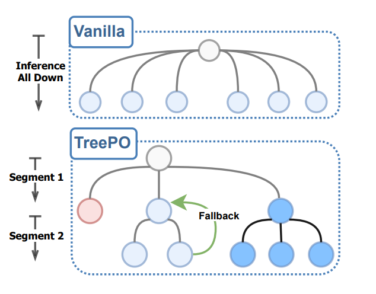
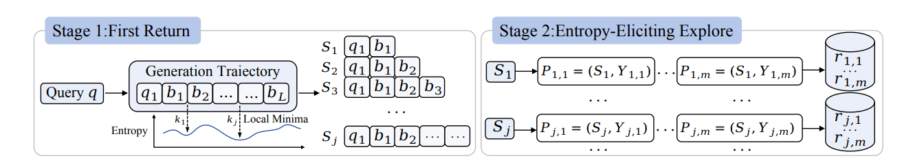

2026.01 - Present
ByteDance Seed
- Focus on evaluation, large-scale pretraining data synthesis and harness.
I am Qingshui Gu (谷清水), currently working at ByteDance Seed in Beijing. At Seed, I focus on evaluation, large-scale pretraining data synthesis and harness infrastructure.
Before joining industry, I received my master's degree from Tsinghua University.
2026.01 - Present
ByteDance Seed
2023.12 - 2026.01
ByteDance
2022.07 - 2023.12
JD.com

TreePO: Bridging the Gap of Policy Optimization and Efficacy and Inference Efficiency with Heuristic Tree-based Modeling.
Yizhi Li*, Qingshui Gu*, Zhoufutu Wen*, Ziniu Li, Tianshun Xing, et al.
Steel-LLM: From Scratch to Open Source - A Personal Journey in Building a Chinese-Centric LLM.
Qingshui Gu, Tianyu Zheng, Shu Li, Zhaoxiang Zhang.

First Return, Entropy-Eliciting Explore.
Tianyu Zheng*, Tianshun Xing*, Qingshui Gu*, Taoran Liang*, Xingwei Qu, et al.
2019.09 - 2022.07
Tsinghua University, Master's study.
2015.09 - 2019.07
Beijing University of Technology, Bachelor's study.
《大模型RAG实战》
Peng Wang, Qingshui Gu, Longpeng Bian. China Machine Press.
A practical Chinese book on RAG principles, applications, and system construction.